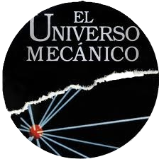

Ya conoces cómo se forman los vectores y la forma de utilizarlos, o por lo menos de utilizar una parte de sus propiedades. Sabes que dados dos puntos \(A\) y \(B\), el vector que va del punto \(A\) al punto \(B\) tiene una dirección, la recta que pasa por \(A\) y por \(B\), y también tiene un sentido, en este caso el que va del punto \(A\) al punto \(B\).
También sabes que, independientemente del lugar en el que coloquemos un vector en un plano, queda definido por tres características que lo identifican. La primera es la dirección y la segunda es el sentido. Éstas ya las conoces, pero nos queda una tercera que vamos a tratar en este punto. Su módulo.
Vídeo

La serie documental "El universo mecánico", realizada por el California Institute of Technology, hace un recorrido por los distintos campos de la física: electricidad, magnetismo, mecánica, etc.
El capítulo 5 está dedicado a los vectores: